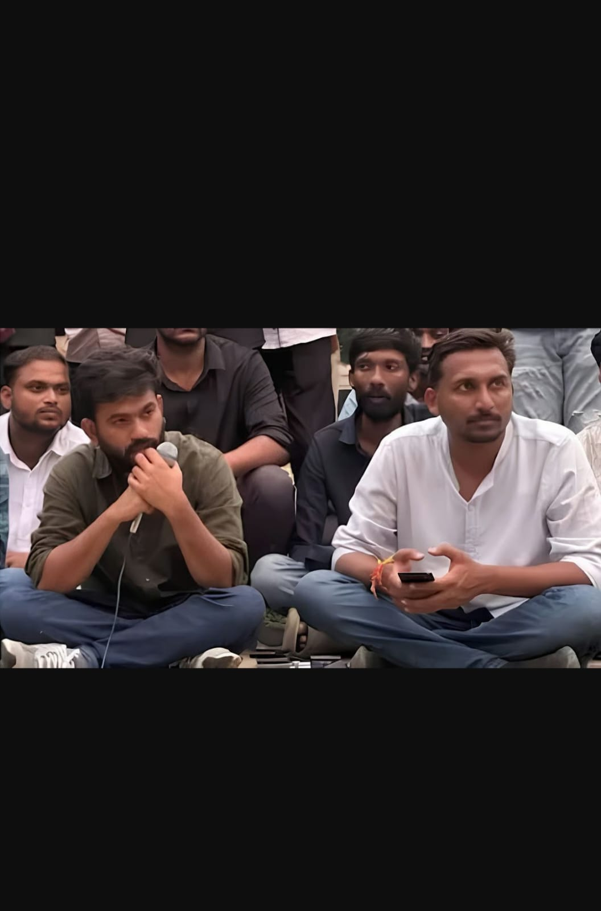

Cockroach Janta Party Protest 2.0
"Jantar Mantar 2.0" — Youth-led movement demands CEC resignation & SIR rollback

📌 Executive Summary
On October 10, 2026, the youth-led satirical movement Cockroach Janta Party (CJP) staged its second major protest at New Delhi's Jantar Mantar — dubbed "Jantar Mantar 2.0" — despite the Delhi Police denying permission. The demonstration demanded the resignation of Chief Election Commissioner Gyanesh Kumar and a rollback of the Special Intensive Revision (SIR) of electoral rolls.
Ahead of the protest, Delhi was placed under an unprecedented security lockdown — metro stations shut, hundreds of trains cancelled, internet suspended, and over 35,000 security personnel deployed. Multiple detentions were reported in the pre-dawn hours, including YouTuber Dhruv Rathee, detained from his Gurugram residence. The CJP's three top leaders — Abhijeet Dipke, Saurav Das, and Ashutosh Ranka — were detained from inside their flight at IGI Airport upon landing in Delhi.
🎯 The Three Core Demands
The CJP's demands were publicly articulated in the lead-up to the protest:
- Resignation of CEC Gyanesh Kumar over alleged irregularities in the electoral revision process.
- Immediate freeze of the SIR exercise and restoration of the January 2025 electoral roll.
- Repeal of the Election Commissioners appointment law and an independent, transparent selection procedure.
Source: Times Now (8 Oct 2026), The Hindu (2 Oct 2026).
🚔 CJP Leaders Detained From Inside Flight
In an unprecedented move, Delhi Police personnel boarded a Mumbai-to-Delhi flight at Indira Gandhi International Airport on Saturday morning and detained three top CJP leaders as soon as the aircraft landed.
Abhijeet Dipke (Founder & National Convener), Saurav Das (Co-Convener), and Ashutosh Ranka (Spokesperson) were taken into preventive custody while still inside the flight. A team of around two dozen women constables entered the aircraft and informed the trio that their request for protest had been denied.
Dipke recorded and livestreamed the conversation with police personnel on Instagram. As they spotted the police, the three leaders chanted "Inquilab Zindabad" and "Bharat Mata ki Jai".
Dipke's statement inside the flight: "Where is the nation heading? They are here to arrest us in the flight. Even Indira Gandhi didn't do this. This is dictatorship."
Before boarding his flight in Mumbai, Dipke had posted on X: "Modi has accepted defeat even before our protest has begun." He said the shutdown of Delhi and the crackdown on supporters were "not signs of strength, but of a leader terrified of his own people."
Sources: ThePrint, Times of India, The Hindu, BBC (all 10 Oct 2026).
🔄 Ajinkya Shinde Takes Over — The New Face of CJP

In a pre-recorded video released on CJP's X handle shortly after Dipke's detention, the founder announced that Ajinkya Shinde, the party's National Organisation In-Charge, would lead the protest until the detained leaders were released. The video was recorded on Friday night in anticipation of the arrests.
Dipke said in the video: "If you are watching this video, it means that I, Saurav Das, and Ashutosh Ranka have been arrested. In our absence, Ajinkya will lead the protest and the CJP movement. Please follow him."
📋 Who Is Ajinkya Shinde?
- Age: 35 years old
- Hometown: Latur, Maharashtra — family originally from Alibaug (agrarian background)
- Education: BTech (Computer Science) from Dr. Babasaheb Ambedkar Technological University (DBATU), Lonere, Raigad
- Corporate Career: Worked at an international IT company in Pune before leaving his job to join politics full-time
- Political Background: Former Aam Aadmi Party (AAP) worker — served as social media coordinator for AAP Maharashtra and convener of its youth wing. Also worked on AAP's 2016 Goa election campaign.
- Connection with Dipke: Met Abhijeet Dipke in Goa in 2016 — friendship dates back nearly a decade
- CJP Role: Appointed as National Organisation In-Charge in August 2026 — responsible for expanding the organisation, coordinating workers, and setting up teams across India
- Key Campaigns: Spearheaded CJP's 'School Thik Karo' campaign for government school reform; organised CJP's Mumbai agitation in early October 2026
- Legal Notices: Named alongside Dipke, Das, and Ranka in a case related to alleged unlawful assembly and sloganeering at Mumbai's Dadar on Gandhi Jayanti
Shinde wasted no time in taking charge. Shortly after the announcement, he urged supporters: "The government is scared of our unity. Please come to Jantar Mantar. If the police stop you, turn that very spot into Jantar Mantar."
He reiterated the party's three core demands — CEC Gyanesh Kumar's resignation, a freeze on the 2025 voter lists, and repeal of the 2023 law governing election commissioner appointments.
Sources: TheWeek, Times of India, News18, NDTV, Bhaskar English, Indian Express (all 10 Oct 2026).

🎥 Dhruv Rathee Detained
YouTuber and political commentator Dhruv Rathee was detained by Gurugram Police from his residence in Kendriya Vihar society, Sector 56, Gurugram, on the morning of October 10, 2026.
According to reports, Rathee had returned to India from Germany earlier in the week and had participated in the CJP protest in Bengaluru on October 8. He had posted on Instagram that he would be travelling to Delhi for the protest. A senior Gurugram Police official had earlier stated: "In case he denies and tries to travel to Delhi, he will be detained."
The CJP responded on X: "Dhruv Rathee has been detained. The Dictator is TERRIFIED of young people who question its wrongdoings and refuse to stay silent!"
Sources: Hindustan Times, Telegraph India, ThePrint (all 10 Oct 2026).

🚔 Mass Detentions Reported
Delhi Police detained hundreds of protesters in the pre-dawn hours and early morning of October 10. Reported figures varied across sources:
- 150 protesters detained on Friday, October 9, per Telegraph India and Times Now.
- Around 500 detained across the city by Saturday morning, per Zee News and Times Now.
- Over 200 detained who arrived from different states to participate, per News18.
- 600+ people with criminal records also held in preventive operations, per Times Now.
- Around 1,000 protesters detained across Delhi by Saturday afternoon, per Telangana Today and Amar Ujala sources.
CJP and SFI (Students' Federation of India) claimed that thousands of protesters were detained across states — from trains, buses, and hotels — to prevent them from reaching Delhi. Maharashtra Police allegedly detained 22 AISF protesters en route to Delhi. The CJP's legal affairs head, Ratna Singh, was detained outside her residence in Jangpura, New Delhi.
Detained individuals were shifted to six designated centres: Chhatrasal Stadium, Rajiv Gandhi Stadium, Yamuna Sports Complex, Surajmal Stadium, Community Centre Daulatpur, and Community Centre Pandrawal. (Source: The Week, 10 Oct 2026)
✅ Confirmed vs ⚠️ Disputed
✅ Reported as Confirmed
- Delhi Police denied permission for the October 10 protest.
- Section 163 BNSS prohibitory orders were in force in New Delhi district.
- Metro gates at 45 stations were closed from 9 PM Oct 9 to 6 PM Oct 10.
- Over 250 trains were cancelled.
- Mobile internet suspended in a 4 km radius.
- Abhijeet Dipke, Saurav Das, and Ashutosh Ranka were detained from inside their flight at IGI Airport.
- Dhruv Rathee was detained from his Gurugram residence.
- Over 35,000 security personnel were deployed.
- Ajinkya Shinde was named as interim leader by Dipke in a pre-recorded video.
- Dipke's grandmother passed away in Maharashtra on the same day.
⚠️ Disputed / Unverified
- Total detention count — varies across sources (150 to 1000+). Organiser claims not independently verified.
- "Dictatorship" framing by CJP — political characterisation, not factual claim.
- Stone pelting incidents — reported near Akashwani Bhawan and Connaught Place; two police personnel injured. Conflicting accounts on who initiated.
- Outcome of the protest — ongoing at time of publication.
- Exact number of metro stations closed — sources report 45 or 57; DMRC advisory initially listed 57, later revised to 45.
📚 References
- The Hindu — "Delhi protest: CJP's Abhijeet Dipke, Saurav Das, Ashutosh Ranka, Ratna Singh detained" — 10 Oct 2026. Read →
- News18 — "'Ajinkya Will Lead Now': CJP Releases Abhijeet Dipke's Pre-Recorded Video Before Detention" — 10 Oct 2026. Read →
- Zee News — "CJP shares plan B after Abhijeet Dipke's detention, shares pre-recorded video naming Ajinkya Shinde as successor" — 10 Oct 2026. Read →
- Times of India — "'This Is DICTATORSHIP': What CJP Founder Abhijeet Dipke Said Just Before Detention Inside Flight" — 10 Oct 2026. Read →
- ThePrint — "2 dozen policewomen board Dipke's flight after landing, detain CJP founder & 2 others" — 10 Oct 2026. Read →
- Telegraph India — "Live Updates: Delhi Police detain YouTuber Dhruv Rathee from Gurugram residence ahead of CJP protest in Jantar Mantar" — 10 Oct 2026. Read →
- Hindustan Times — "YouTuber Dhruv Rathee detained in Gurugram ahead of CJP's Jantar Mantar protest" — 10 Oct 2026. Read →
- The Hindu — "Delhi braces for CJP protest: 57 metro stations shut, trains cancelled, 23,000 security personnel deployed" — 9 Oct 2026. Read →
- The Hindu — "Ahead of anti-CEC protest, Delhi Police detains at least 100 with criminal records in overnight operation" — 10 Oct 2026. Read →
- Telangana Today — "Abhijeet Dipke's grandmother passes away while CJP founder is detained in Delhi" — 10 Oct 2026. Read →
- Times Now — "CJP Leaders Abhijeet Dipke, Ashutosh Ranka And Saurav Das Detained" — 10 Oct 2026. Read →
- News18 — "Over 200 Detained In Massive Police Crackdown Ahead Of CJP's 'Jantar Mantar 2.0' Protest In Delhi" — 10 Oct 2026. Read →
- ThePrint — "CJP's Jantar Mantar 2.0: Home Secy directs all state police chiefs to curb 'unauthorised entry' into Delhi" — 9 Oct 2026. Read →
- News On Air (Govt. of India) — "Delhi Police denies permission for proposed protest by CJP at Jantar Mantar" — 10 Oct 2026. Read →
- Mathrubhumi — "Dipke's pre-recorded video names his successor for CJP protest: Who is Ajinkya Shinde?" — 10 Oct 2026. Read →
- The Week — "Delhi turns into fortress ahead of CJP protest: 35,000 personnel on the streets, 45 metro stations shut" — 10 Oct 2026. Read →
- Amar Ujala — "Abhijeet Dipke, two other CJP leaders detained after landing in Delhi" — 10 Oct 2026. Read →
- Times of India — "CJP protest: Stone pelting at police personnel near Akashwani Bhawan; 2 cops injured" — 10 Oct 2026. Read →
- Indian Express — "'Jaha par police roke, wahaan apna Jantar Mantar banayein': CJP's Ajinkya Shinde to protesters" — 10 Oct 2026. Read →
- Deccan Herald — "CJP protest: Stone pelting at police personnel near Akashwani Bhawan; 2 cops injured" — 10 Oct 2026. Read →
📝 Update History
- 10 Oct 2026, 07:35 AM IST — Initial publication.
- 10 Oct 2026, 09:00 AM IST — Added Dhruv Rathee detention details.
- 10 Oct 2026, 11:30 AM IST — Added Abhijeet Dipke, Saurav Das, Ashutosh Ranka detention details from IGI Airport.
- 10 Oct 2026, 01:00 PM IST — Added Ajinkya Shinde succession details and pre-recorded video information.
- 10 Oct 2026, 03:45 PM IST — Updated with grandmother's death, final detention figures, stone-pelting reports, and 20 verified references.
Spotted an error? Submit via feedback form.
This is a personal field report compiled from publicly available news sources as of the publication time. It is not a substitute for primary reporting or official records. Where claims could not be independently verified, this is stated in-line. The views expressed are not those of any political party, organisation, or government body.
Compiled by Nexus Field Team. Images are representative; attribution pending.